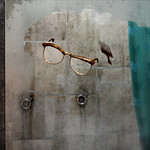

David Spade is an American actor, comedian, producer, and writer born on July 22, 1964, in Birmingham, Michigan. After completing high school Spade attended and later on dropped out of college to pursue a stand-up career. After moving to Los Angeles, he gained exposure and began performing at comedy tours and nightclubs.
Spade's popularity rose as he was later brought on to Saturday Night Live(SNL) skit show. Spade was beloved due to his dry and sarcastic sense of humor while at SNL. He remained at SNL from 1990-96 and began pursuing more acting in the later half of the 90's.
Impactful Roles
David Spade in the SNL show
David Spade is known very well for the humor that he brings to the characters that he portrays. Spade's most well-known acting roles are in the films Tommy Boy, Joe Dirt, and the TV series "Just Shoot Me!". He is recognized for the dry humor that he displays on the screen and has created memorable characters like Joe Dirt.
David Spade is a prolific voice actor lending his voice to countless shows and movies targeted toward a younger audience. He began voice acting very early on in his career with credits in the TV show Bevis and Butt-Head. Spade found great success later on by taking part in the highly successful Hotel Transylvania franchise.
Recent Work
Fictional character "Griffin" voiced by David Spade
David Spade remains a very popular actor with a long career under his belt. He can still be seen performing in films and TV as well as hearing in animated films through his voice-acting performances. Spade's consistency in performing has placed him on a small list of outstanding performers.
Spade can also be seen appearing as a guest in many popular podcasts like 2 Bears 1 Cave, Hotboxin' with Myke Tyson, and Tigerbelly. Spade also has his podcast that posts weekly called Fly on the Wall that he hosts with his friend Dana Carvey. David Spade also performs stand-up with a special out on Netflix.
{kind=link}
{kind=link}
{kind=link}